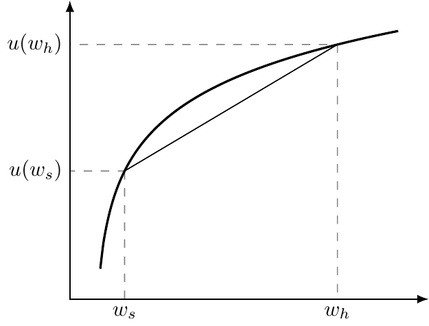
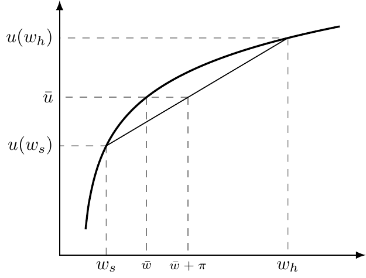

3 Understanding Risk
As George Costanza once learned from his audio book in Seinfeld, “In order to manage risk, we must first define risk.” In the context of health insurance, risk refers to the uncertainty surrounding our future need for medical care. I may get sick or injured tomorrow, or I may not. This exposes me to two types of risk: health risk (uncertainty about whether I need care) and financial risk (uncertainty about whether I will have to pay for that care). These two elements motivate the very existence of health insurance.
3.1 Describing Risk
To understand how insurance works, we need a structured way to quantify risk. This involves four building blocks:
- Probabilities: How likely different outcomes are.
- Payoffs: The monetary consequences of those outcomes.
- Expected values: A way to combine probabilities and payoffs into a single “average” measure of what we face before the outcome is realized.
- Preferences: How individuals evaluate uncertain outcomes, often represented by a utility function.
We’ll look at each of these in turn.
3.1.1 Probability
Probability measures the likelihood that a given outcome will occur. For example, this risk calculator can estimate my 10-year risk of heart disease. Suppose it tells me 10%. This means that if there were 1,000 people just like me, about 100 would develop heart disease over the next decade, while 900 would not.
In this chapter, we’ll work with the simplest setting: only two possible outcomes — sick or healthy. Let \(p_s\) denote the probability of sickness and \(p_h\) the probability of remaining healthy. Since these are the only two possibilities, \(p_h = 1 - p_s\). Car insurers do the same calculation. If 5% of drivers like you have an accident each year, then out of 1,000 similar drivers, 50 will file claims while 950 will not. The logic is identical to health risks.
3.1.2 Payoffs
Payoffs are the monetary value of each possible outcome. Suppose I start with $1,000 in wealth. If I get sick, I incur $500 in health care costs, leaving me with \(w_s = 1000 - 500 = 500\). If I remain healthy, I pay nothing, so \(w_h = 1000\).
3.1.3 Expected value
Before the outcome is realized, I can calculate the expected value of my wealth: the probability-weighted average of possible payoffs:
\[E[w] = p_{h}w_{h} + p_{s}w_{s}\]
With \(p_h = 0.9\) and \(p_s = 0.1\), the expected wealth is $r round(e.pay, 2).
We can also compute expected costs. Because costs only occur if I’m sick, \(E[cost]=p_{h} \times 0 + p_{s} \times cost_{s} = p_{s}cost_{s}\), or $50. Expected wealth and expected cost are related but distinct. Individuals think about expected wealth (what they keep), while insurers focus on expected cost (what they must cover).
3.1.4 Preferences
Preferences describe how people value different outcomes. In economics, we represent them with a utility function \(u(w)\), where \(w\) is wealth. A standard assumption is diminishing marginal utility: each extra dollar is worth less to you the richer you are. Formally, if \(x_1 < x_2\), then \(u'(x_1) > u'(x_2)\).
We can then form expected utility:
\[E[u(w)]=p_{h}u(w_{h}) + p_{s}u(w_{s})\]
For example, if \(u(w) = \sqrt{w}\), the expected utility is r round(e.util, 2). Notice that this is not the utility of the expected wealth — it’s the expectation of utility values. This distinction is critical for understanding risk aversion, risk premiums, and willingness to pay for insurance.
3.2 Risk preferences
With probabilities, payoffs, and utility in place, we can classify risk attitudes:
- Risk averse: Prefers a certain outcome equal to the expected value over the risky gamble. (Certainty equivalent \(CE < E[w]\).)
- Risk neutral: Indifferent between the certain outcome and the gamble. (\(CE = E[w]\).)
- Risk loving: Prefers the gamble over the certain outcome. (\(CE > E[w]\).)
For our purposes, we assume risk aversion, which naturally arises from diminishing marginal utility. Figure 3.1 illustrates risk aversion. The line segment between \(u(w_s)\) and \(u(w_h)\) represents expected utility. Because the utility function is concave, this line always lies below the curve. The implication: given a choice, individuals prefer a certain wealth level to a risky prospect with the same expected value.
A more concrete way to capture risk aversion is through the risk premium, \(\pi\). This is the extra amount of wealth a person would require to accept a gamble instead of a certain outcome.
Figure 3.2 illustrates. If certainty provides utility \(\bar{u}\) at wealth \(\bar{w}\), then facing uncertainty requires wealth \(\bar{w} + \pi\) to reach the same utility. The difference \(\pi\) is the risk premium. We’ll get to this in much more detail in the next chapter.

3.3 Why This Matters
Insurers care about expected cost when setting premiums. Individuals care about expected utility. The gap between the two — captured by the risk premium — explains why people are willing to pay more than the expected cost for insurance. This difference is the foundation of our next step: quantifying willingness to pay for insurance.